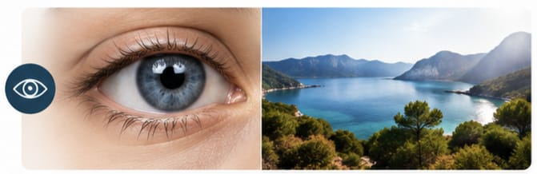

Consultation ophtalmologique et contrôle de la vision
Ce que c'est
Un examen complet de la vision et de la santé oculaire.
Quand consulter
Baisse de vision, gêne visuelle, douleur, suivi régulier, renouvellement de correction ou changement des lunettes ou lentilles.
Déroulement
Mesure de la vision, examen au biomicroscope et examens complémentaires si nécessaire.